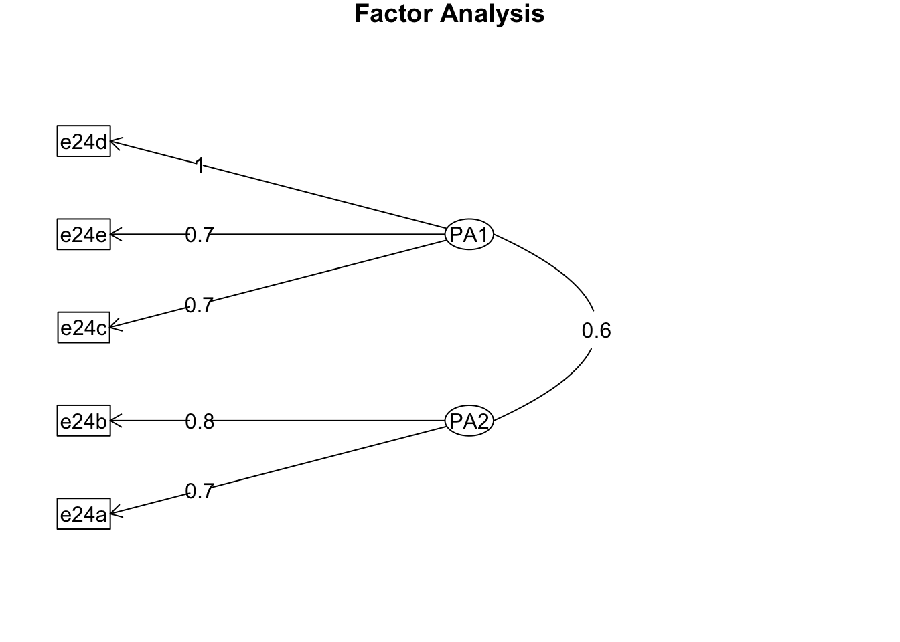

library(haven)
library(psych)
library(data.table)
options(digits = 2)Factor Analysis
因素分析
使用的套件，psych為因素分析函式fa()所存在的套件
資料前處理
讀取資料，刪除遺漏值。
tscs212 <- read_dta("../../../HW/tscs212.dta") |> setDT()
data1 <- tscs212[!(e24a > 5 | e24b > 5 | e24c > 5 | e24d > 5 | e24e > 5),
.(e24a, e24b, e24c, e24d, e24e)]
data1.cor <- cor(data1[, .(e24a, e24b, e24c, e24d, e24e)])使用fa()進行因素分析
nfactors為預計找出的因素數量，rotate為轉軸方式，fa為因素擷取的方式，max.iter為迭代次數。
下列參數為Stata預設參數。
data1.fa <- fa(data1, nfactors = 2, rotate = 'none', fm = 'pa', max.iter = 1)maximum iteration exceededdata1.fa$loadings
Loadings:
PA1 PA2
e24a 0.65 0.34
e24b 0.60 0.38
e24c 0.79 -0.12
e24d 0.79 -0.27
e24e 0.75 -0.19
PA1 PA2
SS loadings 2.59 0.388
Proportion Var 0.52 0.078
Cumulative Var 0.52 0.595data1.fa$values[1] 2.588 0.388 -0.055 -0.153 -0.199其他的設定類型
fa.parallel(data1.cor, n.obs = nrow(data1), fa = "both",
main = "Scree plots with parallel analysis")Parallel analysis suggests that the number of factors = 2 and the number of components = 1 factanal(data1, factors = 2, rotation = "varimax")
Call:
factanal(x = data1, factors = 2, rotation = "varimax")
Uniquenesses:
e24a e24b e24c e24d e24e
0.46 0.29 0.35 0.17 0.40
Loadings:
Factor1 Factor2
e24a 0.33 0.66
e24b 0.21 0.82
e24c 0.72 0.37
e24d 0.89 0.20
e24e 0.72 0.27
Factor1 Factor2
SS loadings 2.0 1.36
Proportion Var 0.4 0.27
Cumulative Var 0.4 0.67
Test of the hypothesis that 2 factors are sufficient.
The chi square statistic is 14 on 1 degree of freedom.
The p-value is 0.00017 fa(data1.cor, nfactors = 2, rotate = "none", fm = "pa")Factor Analysis using method = pa
Call: fa(r = data1.cor, nfactors = 2, rotate = "none", fm = "pa")
Standardized loadings (pattern matrix) based upon correlation matrix
PA1 PA2 h2 u2 com
e24a 0.67 0.38 0.60 0.40 1.6
e24b 0.63 0.48 0.63 0.37 1.9
e24c 0.79 -0.13 0.64 0.36 1.1
e24d 0.83 -0.37 0.83 0.17 1.4
e24e 0.75 -0.20 0.60 0.40 1.1
PA1 PA2
SS loadings 2.73 0.57
Proportion Var 0.55 0.11
Cumulative Var 0.55 0.66
Proportion Explained 0.83 0.17
Cumulative Proportion 0.83 1.00
Mean item complexity = 1.4
Test of the hypothesis that 2 factors are sufficient.
The degrees of freedom for the null model are 10 and the objective function was 2.2
The degrees of freedom for the model are 1 and the objective function was 0.01
The root mean square of the residuals (RMSR) is 0.01
The df corrected root mean square of the residuals is 0.04
Fit based upon off diagonal values = 1
Measures of factor score adequacy
PA1 PA2
Correlation of (regression) scores with factors 0.95 0.81
Multiple R square of scores with factors 0.90 0.65
Minimum correlation of possible factor scores 0.80 0.30fa(data1.cor, nfactors = 2, rotate = "varimax", fm = "pa")Factor Analysis using method = pa
Call: fa(r = data1.cor, nfactors = 2, rotate = "varimax", fm = "pa")
Standardized loadings (pattern matrix) based upon correlation matrix
PA1 PA2 h2 u2 com
e24a 0.31 0.71 0.60 0.40 1.4
e24b 0.22 0.76 0.63 0.37 1.2
e24c 0.71 0.37 0.64 0.36 1.5
e24d 0.89 0.20 0.83 0.17 1.1
e24e 0.72 0.28 0.60 0.40 1.3
PA1 PA2
SS loadings 1.96 1.34
Proportion Var 0.39 0.27
Cumulative Var 0.39 0.66
Proportion Explained 0.59 0.41
Cumulative Proportion 0.59 1.00
Mean item complexity = 1.3
Test of the hypothesis that 2 factors are sufficient.
The degrees of freedom for the null model are 10 and the objective function was 2.2
The degrees of freedom for the model are 1 and the objective function was 0.01
The root mean square of the residuals (RMSR) is 0.01
The df corrected root mean square of the residuals is 0.04
Fit based upon off diagonal values = 1
Measures of factor score adequacy
PA1 PA2
Correlation of (regression) scores with factors 0.92 0.84
Multiple R square of scores with factors 0.84 0.71
Minimum correlation of possible factor scores 0.69 0.41data1.cor.promax <- fa(data1.cor, nfactors = 2, rotate = "promax", fm = "pa")Loading required namespace: GPArotationfsm <- function(oblique) {
if (class(oblique)[2] == "fa" & is.null(oblique$Phi)) {
warning("Object doesn't look like oblique EFA")
} else {
P <- unclass(oblique$loading)
F <- P %*% oblique$Phi
colnames(F) <- c("PA1", "PA2")
return(F)
}
}
fsm(data1.cor.promax) PA1 PA2
e24a 0.52 0.77
e24b 0.46 0.79
e24c 0.79 0.58
e24d 0.91 0.49
e24e 0.77 0.51factor.plot(data1.cor.promax, labels=rownames(data1.cor.promax$loadings))fa.diagram(data1.cor.promax, simple=FALSE)
data1.cor.promax$weights PA1 PA2
e24a 0.073 0.3859
e24b 0.045 0.4642
e24c 0.208 0.1408
e24d 0.579 0.0084
e24e 0.193 0.0760data1 <- tscs212[!(e24a > 5 | e24b > 5 | e24c > 5 | e24d > 5 | e24e > 5 | e24f > 5 | e24g > 5 | e24h > 5),
.(e24a, e24b, e24c, e24d, e24e, e24f, e24g, e24h)]
table(data1$e24f)
1 2 3 4 5
17 50 305 457 752 data1$e24f <- car::recode(data1$e24f, "1=5;2=4;3=3;4=2;5=1")
table(data1$e24f)
1 2 3 4 5
752 457 305 50 17